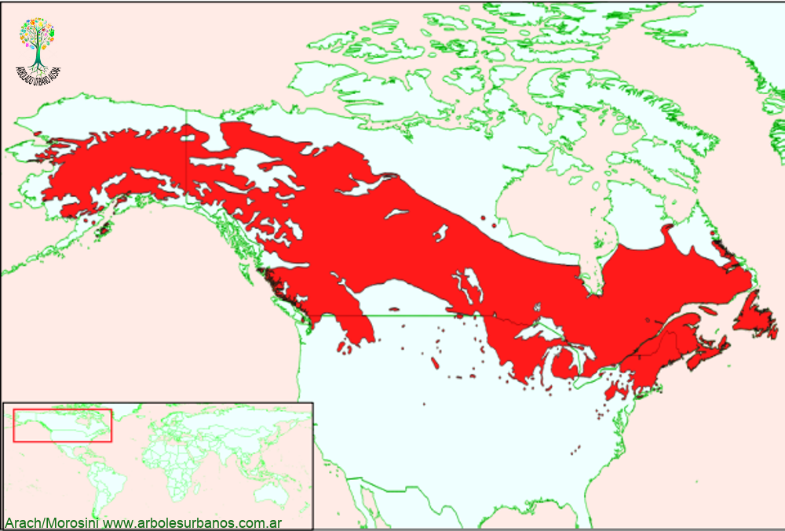

Click en las imágenes para ampliar

{kind=link}
{kind=link}
{kind=link}
{kind=link}
- NOMBRE CIENTÍFICO
- Betula papyrifera
- FAMILIA BOTÁNICA
- Betuláceas
- ORIGEN
- Tiene una gran área de dispersión natural ocupando el sector norte de Norteamérica desde la costa atlántica en la península del Labrador a la pacífica en Alaska, norte de Estados unidos y gran parte de Canadá, habitando incluso más allá del Círculo polar ártico. Existen 5 variedades que conviven con distintos géneros desde piceas alerces y abetos entre las coníferas, mientras que con las latifoliadas generalmente forma bosques junto con otros abedules, alisos y álamos.
- DESCRIPCIÓN GENERAL
- De mediano tamaño crece generalmente entre 15 y 20 metros de altura, aunque se registran ejemplares de hasta 30 metros y 80 cm de diámetro. Posee una copa entre globosa y anchamente cónica. Su corteza es característica, brillante, lisa y blanca o blanco rosada, desprendiéndose en tiras de consistencia papirácea, de allí su epíteto específico.
- HOJAS
- Son alternas, enteras de forma ovadas de borde doblemente aserrado y acuminadas en el extremo, de color verde oscuro en el haz y algo pálido en el envés, pasando a colores amarillos y ocres en el otoño.
- FLORES
- Los amentos masculinos son de 5 cm de largo amarillos, los femeninos de de color verde claro colgantes.FRUTOS: Las infrutescencias son péndulas agrupando las diminutas semillas entre escamas , luego al madurar se desarman.
- REPRODUCCION
- Se lo puede multiplicar por semillas, y también por estacas, estas deben ser recolectadas de árboles maduros y ser los extremos apicales de las ramas, durante fines del invierno.
- USOS
- Los pueblos originarios de Norteamérica, han utilizado los troncos ahuecados para la construcción de canoas. Su savia se utiliza para la elaboración de jarabes por su contenido de glucosa, fructosa y sacarosa. Su madera es utilizada en construcciones rurales en su lugar de origen. En Jardinería es utilizado como ejemplar aislado o en grupos, principalmente por la corteza y los tonos amarillos que adquiere su follaje en el otoño
- PARTICULARIDADES
- En su lugar de origen es una especie pionera, aparece luego de incendios severos y coloniza el lugar